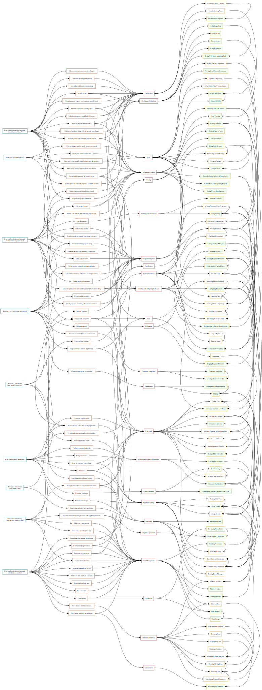

Trying to Find a Form
I have been thinking (again) about what to teach in a full-length course on Software Carpentry and Data Carpentry, which has led me, meta begetting meta, to thinking about how to represent the curriculum for such a course to the people who might teach it and take it. What I've come up with is a four-part division into:
- the big questions learners ask;
- our answers to those questions;
- the lessons that teach people how to implement those answers; and
- the topics within those lessons.
My current rough draft of the above lives in this CSV file (taken from this GitHub repository) and produces the graph shown below–which is basically incomprehensible, even to me. (I've pushed the connections through various graph layout tools to no avail.) Discarding the specific topics for the moment, the connections can be represented as tables (also shown below), which are no more revealing. My question is, what's the best way–or just a better way–to represent this?
Questions, Answers, Lessons, and Topics

Questions to Answers
| How can I… | |||||||||
|---|---|---|---|---|---|---|---|---|---|
| …avoid losing work? | …find and use other people's data? | …find and use other people's software? | …be more productive? | …make it easy for people to collaborate with me? | …make it easy for people to find and use my data? | …make it easy for programs to use my data? | …make it easy for people to find and use my software? | …tell if my results are correct? | |
| Put everything created by people into version control. | X | ||||||||
| Make every value atomic. | X | ||||||||
| Automate repetitive tasks. | X | ||||||||
| Avoid duplicating functionality within modules. | X | ||||||||
| Provide simple re-runnable end-to-end test cases. | X | X | |||||||
| Build tools. | X | ||||||||
| Choose a primary communication channel. | X | ||||||||
| Choose an appropriate visualization. | X | ||||||||
| Clean up data. | X | ||||||||
| Do code reviews. | X | X | |||||||
| Maintain a checklist of things to do before sharing a change. | X | ||||||||
| Organize the project consistently. | X | X | |||||||
| Submit data to a reputable DOI issuer. | X | ||||||||
| Debug programs. | X | ||||||||
| Practice defensive programming. | X | X | |||||||
| Begin programs with explanatory comments. | X | ||||||||
| Don't duplicate code. | X | ||||||||
| Don't duplicate large data. | X | ||||||||
| Make requirements/dependencies explicit. | X | ||||||||
| Foster a welcoming environment. | X | ||||||||
| Get an ORCID. | X | ||||||||
| Give values, functions, and classes meaningful names. | X | ||||||||
| Write good commit comments. | X | ||||||||
| Have the computer repeat things. | X | ||||||||
| Include a README file explaining project scope. | X | ||||||||
| Isolate project dependencies. | X | ||||||||
| Give every record a unique key. | X | ||||||||
| Keep the master copy of every manuscript on the web. | X | ||||||||
| Use meaningful path names. | X | ||||||||
| Normalize data. | X | ||||||||
| Prefer open text formats to proprietary non-text formats. | X | ||||||||
| Find performance bottlenecks. | X | ||||||||
| Maintain a to-do list for each project. | X | ||||||||
| Read error messages. | X | ||||||||
| Represent every analysis step textually. | X | ||||||||
| Record provenance in data. | X | ||||||||
| Record publishing steps like analysis steps. | X | ||||||||
| Use regular layout for spreadsheets. | X | ||||||||
| Remove unused code. | X | ||||||||
| Represent each fact once. | X | ||||||||
| Make results repeatable. | X | X | |||||||
| Re-use libraries rather than writing equivalents. | X | X | X | ||||||
| Run tests automatically before each commit. | X | ||||||||
| Search question-and-answer sites. | X | ||||||||
| Search data and software repositories. | X | ||||||||
| Separate models from views. | X | ||||||||
| Make it easy to set up a development environment. | X | ||||||||
| Submit software to a reputable DOI issuer. | X | ||||||||
| Use path names that are easy to sort and to match. | X | ||||||||
| Make the preferred citation for projects explicit. | X | ||||||||
| Make the project's license explicit. | X | ||||||||
| Store raw data exactly as it arrived. | X | ||||||||
| Store work in a remotely-hosted version control repository. | X | X | |||||||
| Treat metadata like data. | X | X | |||||||
| Tune performance. | X | ||||||||
| Use online collaborative commenting. | X | ||||||||
| Use configuration files and conditionals rather than commenting. | X | ||||||||
| Use dictionaries. | X | ||||||||
| Break programs into short, self-contained functions. | X | ||||||||
| Use text values that are easy to match with regular expressions. | X | ||||||||
| Use more hardware. | X | ||||||||
| Use an open license. | X | X | |||||||
| Use a package manager. | X | ||||||||
| Store data in a relational database. | X | ||||||||
| Write readable software. | X | ||||||||
| Write unit tests to specify and check behavior. | X | ||||||||
Answers to Lessons
| Lessons | ||||||||||||||||||||||||
|---|---|---|---|---|---|---|---|---|---|---|---|---|---|---|---|---|---|---|---|---|---|---|---|---|
| Cloud Computing | Code Review | Collaboration | Continuous Integration | Data Management | Relational Databases | Debugging | Git | Installing and Configuring Software | Make | OpenRefine | Profiling and Tuning Performance | Programming Style | Organizing Projects | 21st Century Publishing | Python (Scripting) | Python (Functions) | Python (Data Structures) | Regular Expressions | Searching | Spreadsheets | Testing | Unix Shell | Visualization | |
| Put everything created by people into version control. | X | |||||||||||||||||||||||
| Make every value atomic. | X | |||||||||||||||||||||||
| Automate repetitive tasks. | X | |||||||||||||||||||||||
| Avoid duplicating functionality within modules. | X | |||||||||||||||||||||||
| Provide simple re-runnable end-to-end test cases. | X | X | ||||||||||||||||||||||
| Build tools. | X | X | ||||||||||||||||||||||
| Choose a primary communication channel. | X | |||||||||||||||||||||||
| Choose an appropriate visualization. | X | |||||||||||||||||||||||
| Clean up data. | X | X | ||||||||||||||||||||||
| Do code reviews. | X | |||||||||||||||||||||||
| Maintain a checklist of things to do before sharing a change. | X | X | ||||||||||||||||||||||
| Organize the project consistently. | X | |||||||||||||||||||||||
| Submit data to a reputable DOI issuer. | X | X | ||||||||||||||||||||||
| Debug programs. | X | |||||||||||||||||||||||
| Practice defensive programming. | X | |||||||||||||||||||||||
| Begin programs with explanatory comments. | X | |||||||||||||||||||||||
| Don't duplicate code. | X | |||||||||||||||||||||||
| Don't duplicate large data. | X | |||||||||||||||||||||||
| Make requirements/dependencies explicit. | X | |||||||||||||||||||||||
| Foster a welcoming environment. | X | |||||||||||||||||||||||
| Get an ORCID. | X | X | ||||||||||||||||||||||
| Give values, functions, and classes meaningful names. | X | |||||||||||||||||||||||
| Write good commit comments. | X | |||||||||||||||||||||||
| Have the computer repeat things. | X | X | ||||||||||||||||||||||
| Include a README file explaining project scope. | X | |||||||||||||||||||||||
| Isolate project dependencies. | X | |||||||||||||||||||||||
| Give every record a unique key. | X | |||||||||||||||||||||||
| Keep the master copy of every manuscript on the web. | X | X | ||||||||||||||||||||||
| Use meaningful path names. | X | X | ||||||||||||||||||||||
| Normalize data. | X | |||||||||||||||||||||||
| Prefer open text formats to proprietary non-text formats. | X | X | ||||||||||||||||||||||
| Find performance bottlenecks. | X | |||||||||||||||||||||||
| Maintain a to-do list for each project. | X | X | ||||||||||||||||||||||
| Read error messages. | X | X | ||||||||||||||||||||||
| Represent every analysis step textually. | X | X | ||||||||||||||||||||||
| Record provenance in data. | X | |||||||||||||||||||||||
| Record publishing steps like analysis steps. | X | X | X | |||||||||||||||||||||
| Use regular layout for spreadsheets. | X | X | ||||||||||||||||||||||
| Remove unused code. | X | |||||||||||||||||||||||
| Represent each fact once. | X | X | ||||||||||||||||||||||
| Make results repeatable. | X | X | X | |||||||||||||||||||||
| Re-use libraries rather than writing equivalents. | X | |||||||||||||||||||||||
| Run tests automatically before each commit. | X | |||||||||||||||||||||||
| Search question-and-answer sites. | X | |||||||||||||||||||||||
| Search data and software repositories. | X | |||||||||||||||||||||||
| Separate models from views. | X | |||||||||||||||||||||||
| Make it easy to set up a development environment. | X | |||||||||||||||||||||||
| Submit software to a reputable DOI issuer. | X | X | ||||||||||||||||||||||
| Use path names that are easy to sort and to match. | X | X | X | |||||||||||||||||||||
| Make the preferred citation for projects explicit. | X | X | ||||||||||||||||||||||
| Make the project's license explicit. | X | X | ||||||||||||||||||||||
| Store raw data exactly as it arrived. | X | |||||||||||||||||||||||
| Store work in a remotely-hosted version control repository. | X | X | X | |||||||||||||||||||||
| Treat metadata like data. | X | |||||||||||||||||||||||
| Tune performance. | X | |||||||||||||||||||||||
| Use online collaborative commenting. | X | |||||||||||||||||||||||
| Use configuration files and conditionals rather than commenting. | X | X | ||||||||||||||||||||||
| Use dictionaries. | X | |||||||||||||||||||||||
| Break programs into short, self-contained functions. | X | |||||||||||||||||||||||
| Use text values that are easy to match with regular expressions. | X | X | ||||||||||||||||||||||
| Use more hardware. | X | |||||||||||||||||||||||
| Use an open license. | X | X | ||||||||||||||||||||||
| Use a package manager. | X | |||||||||||||||||||||||
| Store data in a relational database. | X | |||||||||||||||||||||||
| Write readable software. | X | X | ||||||||||||||||||||||
| Write unit tests to specify and check behavior. | X | |||||||||||||||||||||||